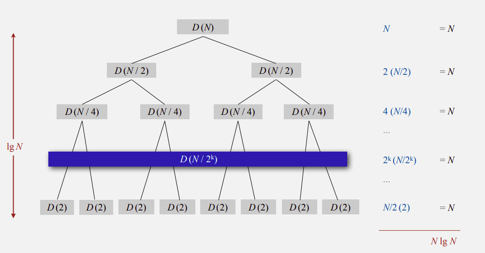
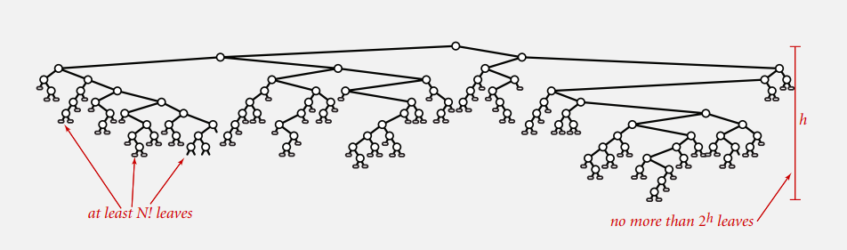

week3: Mergesort & Quicksort
Mergesort
归并排序是一种基于分治思想的稳定排序算法，其时间复杂度为$O(nlogn)$。
我们在此不详细讨论算法本身的设计与实现，而注重于证明其时间复杂度的正确性。
若我们用比较的次数来表示时间的复杂度，那么对于长度为$N$的数组，我们可写出如下不等式：
其中$C(N)$是整个数组的比较次数，最后的$N$是归并操作的比较次数。
为了便于求解，我们仅讨论$N = 2^k, k = 0,1,…$的情况（结论适用于所有$N$），则式子转化为
对于上式我们可以画出递归树来帮助理解过程：

算法从$N$个数一直处理到两个数，每次对半分开处理，所以递归深度为$log_2N$，树的高度也就为$log_2N$，每次递归处理最终归并的比较次数都是$N$次，所以最终比较次数也就是$Nlog_2N$次，则该算法的时间复杂度也就是$O(NlogN)$。
Quicksort
快速排序是一种基于分治思想的不稳定排序算法，其平均时间复杂度为$O(NlogN)$，最差情况为$O(N^2)$。
同样，我们在这里也只是证明算法的时间复杂度，而不讨论该算法的设计与实现。
一般情况
对于不重复元素的数组(distinct numbers)，划分的比较次数恒为$N+1$，且我们假定划分的各种情况概率均等，即划分出的两个子数组元素个数为0与$N-1$、1与$N-2$…的概率都相等。则我们可以得出以下等式：
方程两边同乘$N$，得
令$NCN$减去$(N-1)C{N-1}$，再方程两边同除$N(N+1)$，得
则
最终可得
所以平均时间复杂度为$O(NlogN)$。
最差情况
最差情况是数组已经完全有序（顺序或逆序），此时总的比较次数为
基于比较的排序算法的最优时间复杂度
任何基于比较的排序算法在最坏情况下都至少需要大约$NlogN$次比较。
证明：

最坏情况即需遍历所有的可能排列，共$N!$种排列情况。对于决策树而言，也就是至少有$N!$个叶节点。比较次数就是树的高度$h$，则树最少有$2^h$个叶节点。
综上，我们可以得出以下不等式：
所以，至少需要$NlogN$次比较次数。
Assignment: Collinear Points
代码见这里。在这主要说明下完成作业的几个关键点：
- 该数据类型需要是不可变的(immutable)，即无论中间有多少不同的操作，内部数据都不应有变化。
- 避免重复。在我们根据斜率排序然后加入满足条件的线时，可能会加入前面已经加入过的线。为了避免这一点，我们可以对满足条件的线加一个条件判断，若该线的出发点（即当前点）是整条线上坐标最小的点，才加入，否则跳过。
本博客所有文章除特别声明外，均采用 CC BY-SA 4.0 协议 ，转载请注明出处！